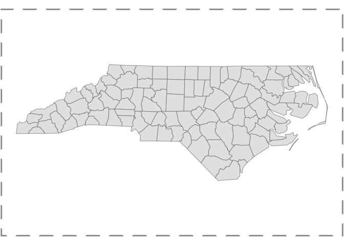
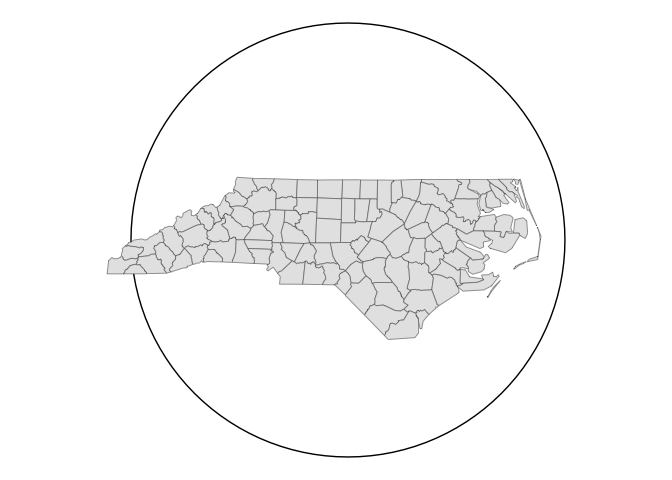
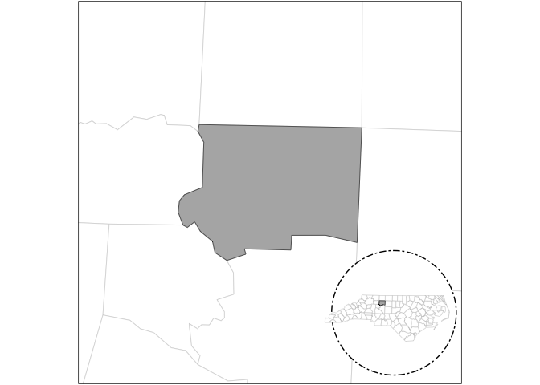

The goal of maplayer is to provide a consistent set of functions for creating map layers using simple feature ({sf}) data, the {ggplot2} package, and a variety of ggplot2 extension packages.
Basic functions
The main layers that work with both a data and location sf object are:
There are several layers that can work with a single sf object as the input data:
Finally, there are layers that require additional packages (listed in Suggests):
-
layer_labelled()optionally uses {ggrepel} or {geomtextpath} -
layer_mapbox()uses {mapboxapi} (requires an API key) -
layer_marked()uses {ggforce} -
layer_icon()uses {ggsvg} -
layer_inset()uses {patchwork} or optionally {figpatch} (forstamp_inset_img())
The package also allows the optional use of packages designed for transforming spatial data or modifying ggplot2 maps. These include:
- {smoothr} (required to use the smooth_params argument)
- {ggfx} (required to use the shadow_params argument)
Many of the functions in {maplayer} were originally developed for the {overedge} package or before that for the {mapbaltimore} package. The {overedge} package has been split up into three smaller packages including {maplayer}, {getdata}, and {sfext}.
Installation
You can install the development version of maplayer like so:
pak::pkg_install("elipousson/maplayer")Example
library(maplayer)
library(ggplot2)
library(sf)
#> Linking to GEOS 3.11.0, GDAL 3.5.3, PROJ 9.1.0; sf_use_s2() is TRUEAdd icons to a map
layer_icon() wraps ggsvg::geom_point_svg() to provide an convenient way to make icon maps.
You can create maps using a single named icon that matches one of the icons in map_icons.
nc <- read_sf(system.file("shape/nc.shp", package = "sf"))
nc <- st_transform(nc, 3857)
theme_set(theme_void())
nc_map <-
ggplot() +
geom_sf(data = nc)
nc_map +
layer_icon(data = nc, icon = "point-start", size = 8)
Add a neatline to a map
layer_neatline() hides major grid lines and axis label by default. The function is useful to draw a neatline around a map at a set aspect ratio.
nc_map +
layer_neatline(
data = nc,
asp = "6:4",
color = "gray60", linewidth = 2, linetype = "dashed"
)
layer_neatline() can also be used to focus on a specific area of a map with the option to apply a buffer as a distance or ratio of the diagonal distance for the input data. The label_axes and hide_grid parameters will not override a set ggplot theme.
nc_map +
layer_neatline(
data = nc[1, ],
diag_ratio = 0.5,
asp = 1,
color = "black",
label_axes = "--EN",
hide_grid = FALSE,
expand = FALSE
)Add labels or numbers to a map
nc_map +
layer_labelled(
data = nc[c(10, 20, 30, 40), ],
geom = "sf_label",
mapping = aes(label = NAME)
)
nc_map +
layer_numbers(
data = nc[c(10, 20, 30, 40), ],
aes(fill = NAME),
num_style = "Alph",
size = 3.5
) +
guides(fill = "none")Create a frame around a feature
circle_nc <-
ggplot(data = nc) +
# layer_frame requires a data arg if neatline = TRUE
layer_frame(data = nc, style = "circle") +
# layer_location_data can inherit data
layer_location_data()
circle_nc
Create an inset map
nc_context <-
layer_frame(
data = nc,
linetype = "twodash",
neatline = FALSE,
basemap = TRUE
) +
layer_location_context(
location = nc[25, ],
context = nc,
context_params = list(fill = "white", color = "gray80", alpha = 1),
neatline = FALSE
)
nc_context +
layer_neatline(
data = nc[25, ],
dist = 15,
unit = "mi",
asp = 1
) +
layer_inset(
inset = nc_context,
scale = 1.5
)